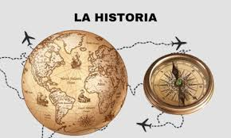

HISTORIA
Me gusta la materia de Historia porque me permite conocer cómo vivían las personas en otras épocas y entender los acontecimientos que han formado el mundo en el que vivimos hoy. A través de la Historia puedo aprender sobre civilizaciones antiguas, revoluciones, descubrimientos y cambios sociales que marcaron el rumbo de la humanidad.
También me ayuda a comprender por qué existen ciertas costumbres, leyes y tradiciones en nuestra sociedad actual. Estudiar Historia no solo es memorizar fechas, sino analizar causas y consecuencias, y reflexionar sobre los errores y logros del pasado para no repetirlos en el presente. Por eso me parece una materia interesante e importante, ya que nos da identidad y nos enseña a valorar nuestra cultura y la de otros pueblos.

VOLVER AL MENU